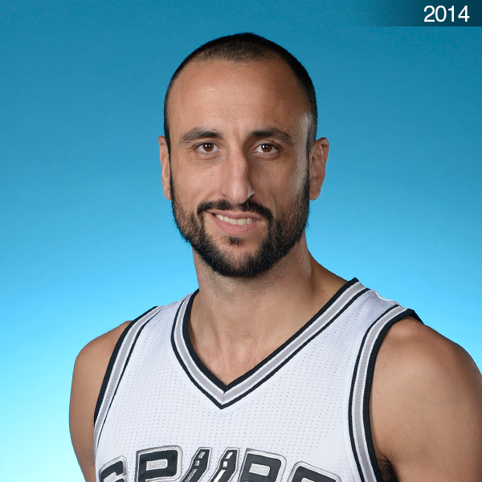

Argentinos que Brillaron en la Gran Liga
Emanuel Ginobili
Exjugador de baloncesto, nacido en Bahia Blanca, Argentina. Ginóbili fue elegido en el puesto 27 de segunda ronda de Draft en el año 1999 por San Antonio Spurs.
InfoFabricio Oberto
Fabricio Raúl Jesús Oberto es un exjugador de baloncesto argentino. Compartio Equipo con Emanuel Ginobili, Los San Antonio Spurs. Nacido en Las Varillas, Cordoba, Argentina.
Info+Facundo Campazzo
Facundo Campazzo es un jugador profesional de baloncesto argentino que pertenece al Estrella Roja de Belgrado de la ABA Liga. Con 1,78 metros de altura, se desempeña en la posición de base.
Info+